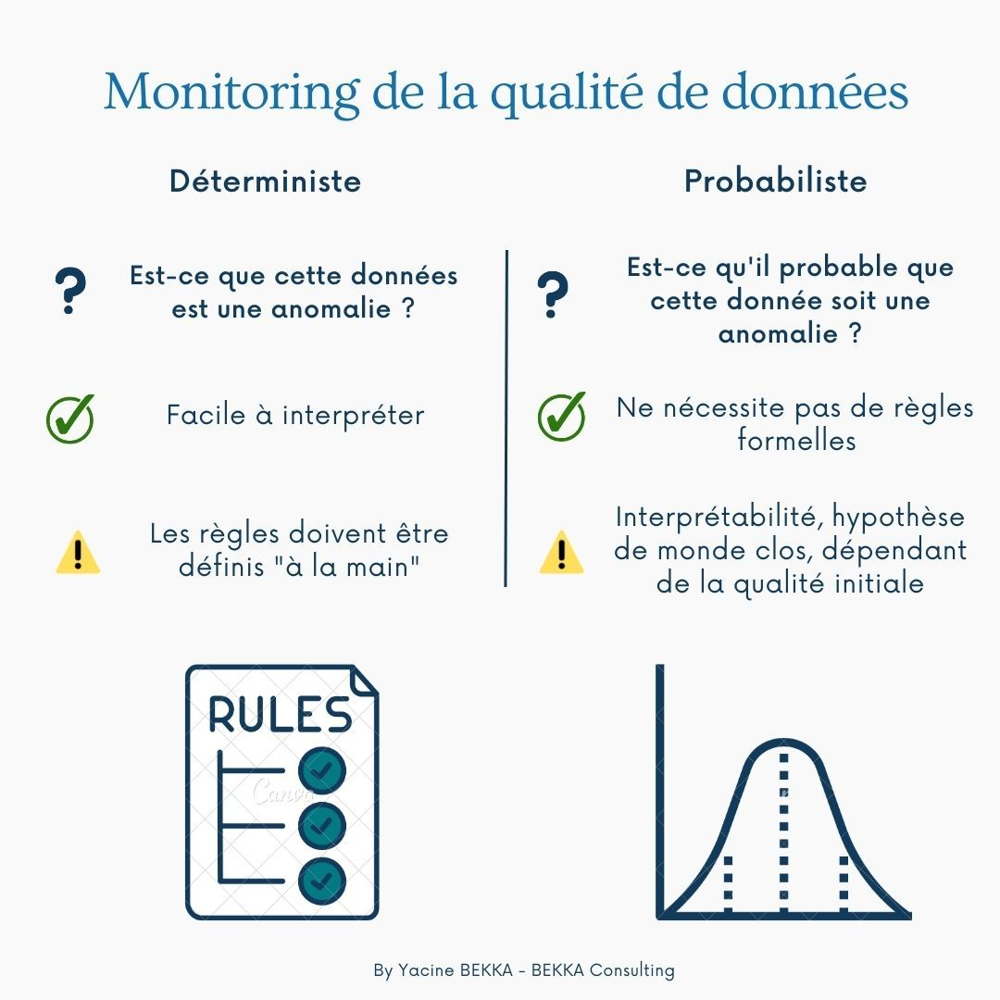

Repost Linkedin : https://www.linkedin.com/posts/yacine-bekka_contr%C3%B4le-de-qualit%C3%A9-de-donn%C3%A9es-d%C3%A9terministe-activity-7060138562465280000-QDzQ?utm_source=share&utm_medium=member_desktop
Contrôle de qualité de données DÉTERMINISTE vs PROBABILISTE…
Est-ce que tu connais les différences entre ces deux types de contrôle ?
Je te propose cette petite infographie qui résume mes connaissances sur le sujet ⬇️
Contrôle déterministe (basé sur des règles et une logique conditionnelle) :
- Question : Est-ce que cette donnée est une anomalie ?
- Avantages : Facile à interpréter
- Inconvénients : Les règles doivent être définis à la main et nécessitent une certaine connaissance du domaine métier
Contrôle probabiliste (détection d’anomalies, etc) :
- Question : Est-ce qu’il est probable que cette données soit une anomalie ?
- Avantages : Ne nécessite pas des règles formelles
- Inconvénients : Interprétabilité plus délicate (faux positif/faux négatif), théorie du monde clos et dépendance au niveau de qualité initiale
Évidemment les deux approches ne sont pas opposées et peuvent se compléter
Mais dans un souci de simplicité, je préfère me concentrer en premier lieu sur les contrôles déterministe
Qui me permettent de transitionner plus facilement vers les autres étapes de la démarche qualité
En revanche, si je suis sur une démarche qualité déjà rodée et que je veux aller un peu plus loin, dans ce cas les contrôles probabilistes sont très intéressants (notamment sur du dédoublonnage).
